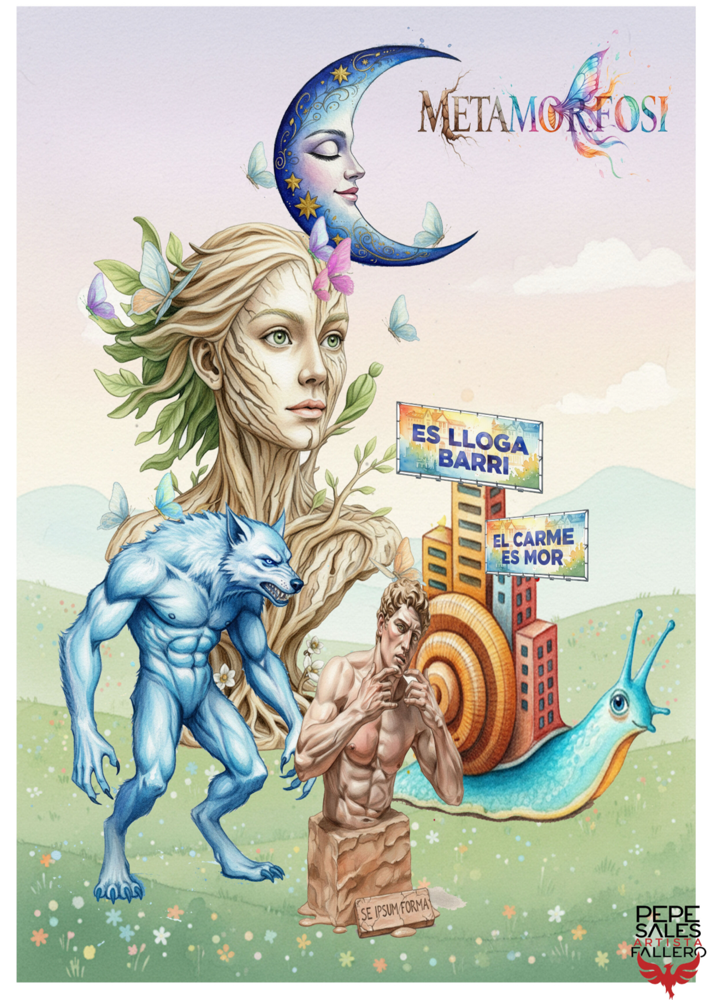
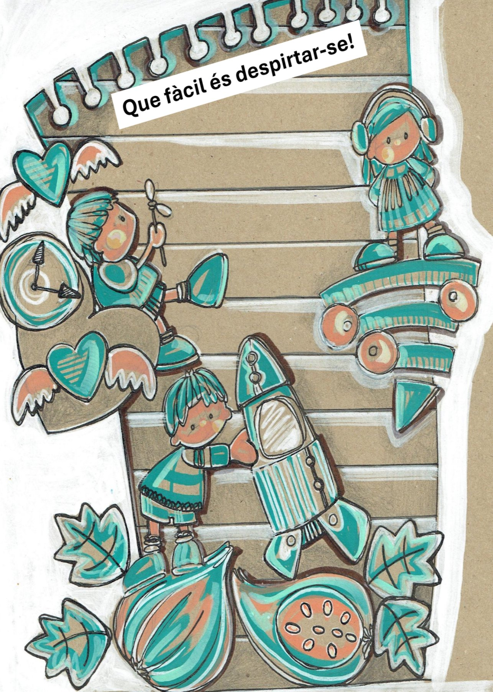

Fallera Mayor 2026
Luna

Fallera Infantil 2026
Carmela

Boceto Falla Mayor
Boceto Falla Mayor
Falla Mayor - Metamorfosis
Lema: Metamorfosis
Artista: Pepe Sales
Resumen
Un recorrido simbólico por la metamorfosis como cambio físico, social y personal: de la naturaleza al barrio, y del instinto humano a la construcción de la identidad.
Idea general
La Falla se adentra este año en el concepto de la metamorfosis, entendido no solo como cambio físico, sino también como transformación social, filosófica y personal. Todo cambia: la naturaleza, las personas, los barrios, las ideas. El monumento ofrece una mirada crítica y simbólica a estas transformaciones, reflejando cómo de cada cambio surge una reflexión sobre lo que somos y en qué nos convertimos.
La mujer-árbol — la naturaleza y lo humano
El eje del monumento lo compone el busto de una mujer-árbol, mitad humana y mitad corteza. Su cuerpo es carne y al mismo tiempo raíces que se hunden en la tierra y ramas que se abren hacia el cielo. Ella encarna la unión de lo natural y lo humano, recordándonos que todo lo vivo está en constante mutación.
El hombre-lobo — “El hombre es un lobo para el hombre”
La primera metamorfosis nos acerca al mito del hombre-lobo, símbolo del instinto salvaje que permanece en el interior humano. Pero más allá de la fábula, la escena dialoga con la frase filosófica “homo homini lupus” (el hombre es un lobo para el hombre), reflejando la ferocidad y crueldad que a menudo los seres humanos ejercen entre sí.
El hombre que se transforma en lobo no es un monstruo de la noche, sino una metáfora de nuestra propia violencia, de la depredación mutua que persiste en la sociedad.
El caracol urbano — la mutación del barrio
De la naturaleza pasamos a la ciudad. Un gran caracol avanza lentamente, pero su caparazón no es concha, sino un bloque de edificios. El animal simboliza el barrio, que carga a cuestas el peso de la transformación turística.
Donde antes había comercios de proximidad —panaderías, carnicerías, pescaderías— hoy emergen tiendas y negocios orientados al visitante efímero. El caparazón se convierte en una prisión que encierra la identidad del vecindario, recordando cómo la metamorfosis urbana muchas veces expulsa a quienes le daban vida.
El hombre de arcilla — el “hombre hecho a sí mismo”
Por último, surge la figura del hombre de arcilla, que se esculpe a sí mismo desde un bloque informe. Es metáfora del individuo que se forja con esfuerzo y voluntad. Sin embargo, la escena deja abierta la pregunta: ¿hasta qué punto somos libres en esa construcción de nosotros mismos, o cuántas veces somos modelados por las manos invisibles de la sociedad?
La arcilla, frágil y moldeable, es también recordatorio de nuestra vulnerabilidad.
Conclusión
“Metamorfosis” es, en conclusión, un viaje a través del cambio: el que nos impone la naturaleza, el que nos provocamos los unos a los otros, el que transforma nuestro entorno y el que intentamos realizar en nosotros mismos.

Boceto Falla Infantil
Boceto Falla Infantil
Que fàcil que és despistar-se!
Despistar-se va associat a tindre el cap als núvols,
però, en realitat, és senyal de felicitat.
Es despista qui s’enamora.
També la que es distrau mirant com vola una mosca.
Despisten molt les pantalletes!
I per descomptat, va despistat el somiador que vol fer realitat projectes quasi impossibles.
Despistar-se és viure despreocupat i feliç, sense fer mal a ningú i mirant de fer les coses al teu aire.